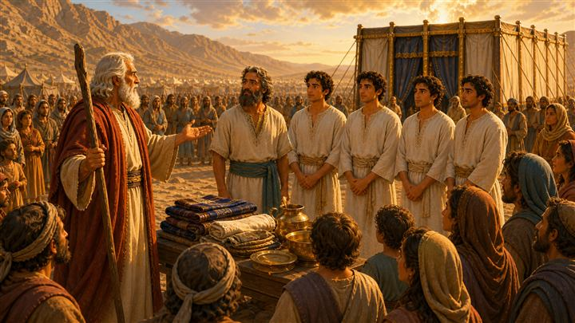
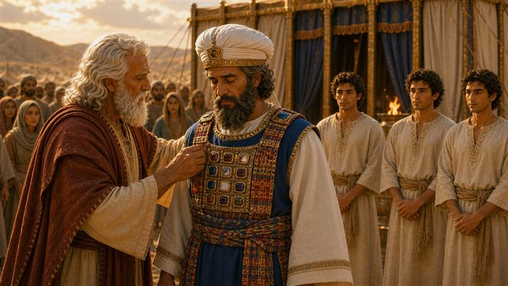
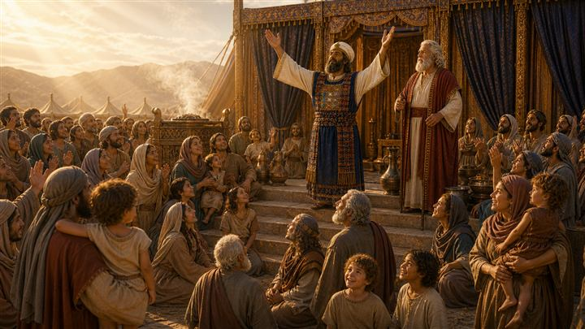
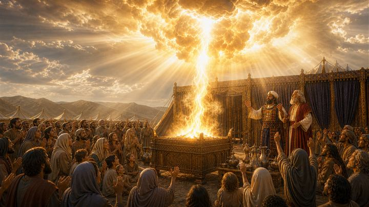
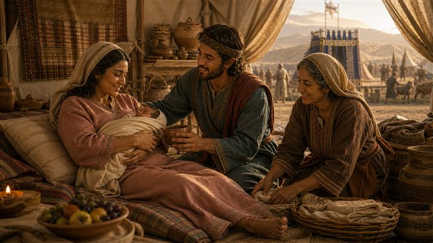
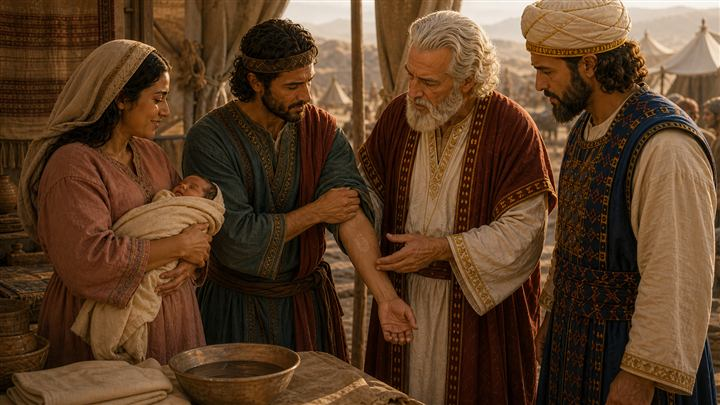
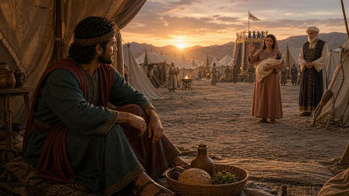
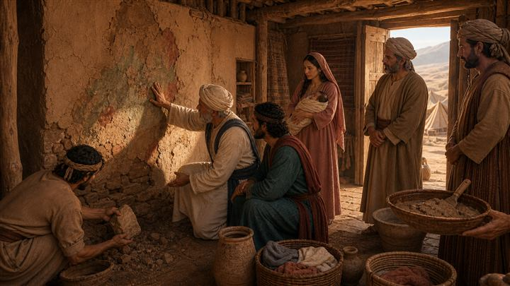

神已經住進來了
還記得上一次嗎？神說了五種祭，教他們做錯了怎麼回來。
現在把鏡頭拉遠一點。會幕在營地正中央，光從上面下來。神真的住進來了。
可是住進來之後，馬上有一個很實際的問題：這麼多人、這麼多狀況，誰來管這件事？
利未記 8-15｜界線不是只有排除，也包含回來的路
當聖潔的神住在群體中間，祭司與百姓要如何分辨「聖／俗、潔淨／不潔」，保護聖所的界線，也讓暫時不潔的人重新回到共同生活？課程範例《利未記》8-15章
這段不是一套「哪些東西很髒、哪些不能碰」的規則。它在建立一個以神的臨在為中心的生活秩序：誰可以接近 → 什麼狀態需要暫停 → 誰來判定 → 如何潔淨 → 何時恢復。
整卷書的位置也很清楚：利 1-7 回答「祭物要怎麼獻？」，利 8-10 回答「誰來管理這套秩序？」，利 11-15 回答「百姓每天生活中，哪些狀態需要被辨認？」，接著利 16 回答「當污染累積在聖所，要怎麼處理？」
| 詞 | 大意 | 不代表 |
|---|---|---|
| 聖 | 被分別、專屬於神 | 比別人更善良 |
| 俗／普通 | 日常、沒有被特別分別為聖 | 邪惡 |
| 潔淨 | 可以正常參與祭儀與群體生活 | 比別人更好 |
| 不潔 | 暫時受到限制，需要等待或潔淨 | 犯罪、壞人 |
不潔 ≠ 犯罪。
生產會造成不潔，卻不是犯罪。月經會造成不潔，卻不是犯罪。接觸屍體會造成不潔，也不表示這個人道德敗壞。教學時絕對不能把「需要潔淨」講成「神覺得這個人很髒、很壞」。
知道利 8-10 是祭司上任、利 11-15 是日常生活的辨認，兩段合起來在回答「誰管理秩序、什麼狀態要暫停」。
認識「聖／俗、潔淨／不潔」四個詞的意思，以及它們各自不代表什麼。
知道潔淨有一套程序：察看 → 洗濯 → 等待 → 再察看 → 第八天獻祭 → 恢復。
描述一個人的狀態，不等於判定一個人的價值。
被託付得越多、位置越靠近中心的人，責任越大，不是越自由。
說「先不要」的時候，也要說得出「什麼時候可以回來」。
神是聖潔的，所以我們學習分辨。
一個人需要幫助或暫時被限制，不代表他是一個不好的人。
神不只設立界線，也預備讓人重新回來的道路——而且是有權判定的人走出去。
使你們可以將聖的、俗的，潔淨的、不潔淨的，分別出來；又使你們可以將耶和華藉摩西曉諭以色列人的一切律例教訓他們。利未記 10:10-11
你們要成為聖潔，因為我是聖潔的。利未記 11:44
祭司要出到營外察看。利未記 14:3
你們要這樣使以色列人與他們的污穢隔絕，免得他們玷污我的帳幕，就因自己的污穢死亡。利未記 15:31
「不潔的人就是做了壞事的人。」
生產、月經、接觸屍體都會造成禮儀性不潔，但都不是犯罪。不潔是狀態，不是人格判決。
「聖潔就是比較乾淨、比較有道德。」
聖潔首先是被分別、專屬於神。器皿、日子、地方都可以是聖的。聖潔不等於優越。
「這些食物規定，是神早就知道哪些不健康。」
經文的語言不是營養學。這些規定建立以色列作為神百姓的身份與界線——連吃東西都在提醒「我們是屬神的人」。
「被送到營外，就是被丟掉了。」
營外是暫時的。利 14 章一開頭就寫：祭司要出到營外察看他。界線不等於永久排除。
「所以我們今天也要照這樣隔離人。」
現代醫療與公衛要依可靠的醫學知識。我們學的是神聖、界線、責任、分辨與恢復的原則，不是照搬古代制度。
利 8 章其實是在實行出埃及記 29 章早已吩咐的承接聖職禮：會幕蓋好、祭祀制度說明完畢，現在祭司正式上任。摩西洗濯他們、穿上聖服、膏抹、獻祭，並把血抹在右耳垂、右手拇指與右腳大拇趾上，最後他們要留在會幕門口七天。這一連串動作的重點是：祭司不是先得到權力，而是先被放進神的規範。
血抹耳、手、腳常被延伸應用成「聽神、服事神、走神的道路」。這是後來的靈修式理解，不是經文本身明說的象徵意思；比較穩妥的原意是：祭司整個人被納入承接聖職的神聖儀式。講給孩子時可以提到那個延伸，但要說清楚那是「我們後來的體會」。
第 9 章與第 10 章形成全段最有力的對照：同樣是神的火出來——9 章燒盡祭物，百姓歡呼俯伏；10 章燒滅祭司，故事陷入危機。同樣的神聖臨在，一邊帶來祝福，一邊顯出危險。經文只明確指出拿答、亞比戶獻上「耶和華沒有吩咐」的火；至於是不是火源錯誤、時間錯誤、或喝醉，經文沒有明說，所以不要把後面禁止祭司值勤飲酒的規定直接講成「他們一定是喝醉才死」——那只是推測。
第 10 章真正的轉折在神接著說的那句話：祭司要分辨聖與俗、潔淨與不潔，並教導百姓。這句直接帶出 11-15 章——祭司不只是獻祭的人，也是負責分辨的人。而第 13 章的 ṣāraʿat（傳統譯「大痲瘋」）涵蓋範圍很廣，甚至出現在衣物和房屋上，不宜直接等同現代漢生病；比較好的說法是「某種需要祭司判定的異常表徵」。祭司做的不是診斷病名、開藥、治療，而是判定這個人在祭儀與群體生活中的狀態。
整段最值得孩子記住的畫面在第 14 章：一個曾被判定不潔的人狀況恢復了，祭司要走到營外查看他。不是要求那個人先自己闖回來，而是有權判定的人走出去。確認之後才開始察看 → 洗濯 → 剃毛 → 等待 → 再洗 → 第八天獻祭 → 恢復群體資格。這形成整堂課最重要的牧養信息：好的界線，不只知道什麼時候說「先不要」，也知道什麼時候、用什麼方法說「你可以回來了」。
| 起 | 長度 | 單元 | 內容 |
|---|---|---|---|
| 00:00 | 1'00" | 開場提問 |
|
| 01:00 | 10'00" | 經文故事 20 幀分鏡 |
|
| 11:00 | 1'30" | 遊戲規則 |
|
| 12:30 | 4'30" | 遊戲進行 |
|
| 17:00 | 3'00" | 反思總結 |
|
| 20:00 | — | 道具：狀況卡 ×6（可多備）、計時器 | |
還記得上一次嗎？神說了五種祭，教他們做錯了怎麼回來。
現在把鏡頭拉遠一點。會幕在營地正中央，光從上面下來。神真的住進來了。
可是住進來之後，馬上有一個很實際的問題：這麼多人、這麼多狀況，誰來管這件事？

摩西站在全會眾面前，把亞倫和他的四個兒子叫出來。
你看桌上擺了什麼——摺好的衣服、油、金的器皿。今天要辦一件事：祭司上任。
注意一件事：他們五個人，是站在全部人的面前被叫出來的。這不是私下的安排。
利未記 8 章（承接出埃及記 29 章）
上任的第一個動作不是給他權力，是洗。
摩西親手倒水，亞倫低著頭洗手。後面四個兒子安靜排隊等。
你有沒有注意到——他們還什麼都還沒做，就先被洗了。

接下來，摩西幫亞倫穿上祭司的衣服：鑲著十二顆寶石的胸牌、頭上的冠冕。
這件衣服不是亞倫自己挑的，是神規定的樣式。
胸牌上的十二顆寶石代表以色列十二個支派。意思是：他每天工作的時候，整個群體都掛在他胸前。
摩西拿起裝油的角，把油倒在亞倫頭上。
而且不只人——旁邊那個金色的壇、那些器皿，也一樣被抹上油。
這就是「聖」的意思。不是「這個人道德比較好」，是「這個被分別出來，專門屬於神」。
所以杯子可以是聖的，桌子可以是聖的，日子也可以是聖的。
再來這個動作很特別。摩西把血抹在亞倫的右耳垂、右手大拇指、右腳大拇趾上。
你看他的手掌，還有一點紅紅的；他的腳也伸出來了。
後來的人常說：耳朵是聽神、手是服事神、腳是走神的路。那是我們後來的體會，很美，但經文自己沒有這樣說。
經文自己的重點比較單純：從頭到腳，整個人都被放進這個儀式裡。沒有一部分是「不算」的。
教學界線「耳/手/腳＝聽神/服事/行走」是靈修式延伸，不是經文明說的象徵。可以講，但要說清楚那是後人的體會。
穿好了、抹好了，是不是就可以開始工作了？
還不行。神說：要留在會幕門口，七天。
你看這張圖——星星出來了，全營都睡了，他們五個人還坐在門口。摩西在遠處看著。
七天，什麼事都不做，就是等。被託付一件大事之前，先學會等。
第八天到了。亞倫終於開始工作。
他做的第一件事是什麼？先為自己獻祭。
不是先為百姓，是先處理自己。
這一點很重要：祭司不是站在制度外面、已經很完美的人。他也在裡面。
利未記 9 章

處理完自己，也為百姓獻完祭，亞倫走上台階，舉起雙手祝福大家。
你看下面的人——有人拍手，有人抬頭，小朋友笑著。
這是一個很好的時刻。等了七天，終於等到了。

然後，耶和華的榮耀向百姓顯現。火從神面前出來，把壇上的祭物燒盡。
百姓的反應是：歡呼，然後俯伏在地。
你先把這個畫面記在腦子裡——神的火出來 → 燒盡祭物 → 百姓歡呼。
因為下一張，同樣的事會再發生一次。
亞倫的兩個兒子，拿答和亞比戶，拿著香爐獻上了神沒有吩咐的火。
火從耶和華面前出來——這次燒滅的是他們。
★ 第 10 張跟這一張，發生的是同一件事嗎？
（神的火出來 → 燒盡祭物 → 歡呼 ／ 神的火出來 → 燒滅祭司 → 全場安靜）
同樣是神的臨在，一邊帶來祝福，一邊顯出危險。神聖，不是可以任意對待的東西。
教學界線經文只說他們獻上「耶和華沒有吩咐」的火。是不是火源錯、時間錯、還是喝醉，經文沒有明說。不要講成「他們一定是喝醉才死」——那只是推測。
利未記 10:1-2
出了這麼大的事，神接下來說了什麼？
神說：祭司要分辨聖的和俗的、潔淨的和不潔淨的，並且教導百姓。
這句話是整段故事的轉軸。從這裡開始，祭司的工作變了——
他不只是獻祭的人，他還是負責「分辨」和「教」的人。
你看他手上拿著器皿，地上排了一整排東西。他在上課。
利未記 10:10-11
第一課從最日常的事開始：吃。
你看左邊：羊、山羊、羚羊。右邊：駱駝、豬、蜥蜴、還有那些貝類。神說哪些可以吃、哪些不可以。
很多人會說：「神早就知道哪些食物不健康。」——但經文不是這樣講的。
這些規定是在說一件事：你們是屬神的一群人。連吃東西都在提醒你們這件事。
聖潔不是只有走進會幕才開始。
利未記 11 章；11:44

下一課更需要小心。這位媽媽剛生完孩子。爸爸遞水給她，婆婆在旁邊幫忙。
利未記說：生產之後，有一段時間她處在「不潔」的狀態，需要等待和潔淨。
★ 所以我問你們一個問題：生孩子，是不是做錯事？
（等回答）不是。絕對不是。
「不潔」是一種狀態，不是一個罪名。身體自然發生的事——生產、流血、生病——會讓一個人暫時不能照平常的方式進會幕，但那跟「他做壞事」完全是兩回事。
教學界線男嬰女嬰潔淨期不同，經文本身沒有解釋原因，不要教成「女孩子比較不潔」。另外利 12 章也寫了：家裡經濟不夠，可以用兩隻鳥代替羊。
利未記 12 章；參 15 章

這位叔叔手臂上出現了一塊斑。祭司彎下腰，很仔細地看。
他會做什麼？觀察 → 等七天 → 再看一次 → 才判定。
注意，祭司不是醫生。他不開藥、不治療。他做的是判定：這個人現在在群體生活裡是什麼狀態。
而且他很謹慎——要等七天再看一次。他不急著下結論。
教學界線ṣāraʿat 傳統譯「大痲瘋」，但這個字也用在衣服和房屋上，不宜直接等同現代漢生病。比較好的說法：某種需要祭司判定的異常表徵。
利未記 13 章

判定的結果是：他現在不潔，要暫時住到營外。
看這張圖。他一個人坐在那裡，抱著膝蓋。遠遠的，太太抱著寶寶跟他揮手。
你有沒有發現，這件事的影響不只是宗教上的？他吃不到晚餐、抱不到孩子、聽不到大家在笑什麼。他暫時離開了正常的生活圈。
★ 如果坐在那裡的人是你，你最希望有人為你做什麼？
（等回答）記住你們剛剛講的話。下一張圖就是答案。
利未記 13:46
過了一段時間，他的狀況好了。那接下來呢？
他是不是要自己想辦法衝回營裡，跟大家說「我好了你們讓我進去」？
不是。利未記 14 章第一句就寫著：祭司要出到營外察看他。
★ 你們看清楚了嗎——是誰走出去？
（等回答）是那個有權判定的人，自己走出去。他蹲下來，握住那隻手臂，仔細看。
這就是這堂課最重要的一句話：好的界線，不只知道什麼時候說「先不要」，也知道什麼時候、用什麼方法說「你可以回來了」。
利未記 14:3
確認之後，開始潔淨。你看：他在洗，祭司拿著一把草灑水，旁邊籃子裡有兩隻鳥。
整個程序是這樣：察看 → 洗濯 → 剃毛 → 等待 → 再洗一次 → 第八天獻祭 → 恢復。
所以「回來」不是一秒鐘的事。它是一個安全的、清楚的、有步驟的過程。
而且每一步他都知道自己走到哪裡了——這很重要。
利未記 14 章

還沒完。如果房子的牆上出現奇怪的斑紋，祭司也要來查看。
必要的話：封屋、等待、挖掉那幾塊石頭、刮掉灰泥。如果一直反覆出現，甚至可能整棟拆掉。
所以這套秩序不只管人的身體，也管衣服、房子、生活空間。
在祭司的世界裡，信仰不是只有內心的事，它碰觸整個生活。
利未記 14 章後半
最後一張。他回來了。抱著太太和孩子，旁邊的小孩在拍手。祭司站在一邊，遠方會幕的煙還在升。
利未記 8 到 15 章，講了祭司上任、講了火、講了食物、講了身體、講了房子——但整段真正關心的從來不是「找出誰很髒」。
它關心的是：怎麼維持界線，同時讓暫時被限制的人，有一條清楚的路可以回來。
所以請記住這三句話：神是聖潔的，所以我們學習分辨。一個人需要幫助或暫時被限制，不代表他是一個不好的人。神不只設立界線，也預備讓人重新回來的道路。
神是聖潔的，所以我們學習分辨。
一個人需要幫助或暫時被限制，不代表他是一個不好的人。
神不只設立界線，也預備讓人重新回來的道路。
整堂課的第一界線：不潔 ≠ 犯罪。這是課程範例反覆強調的一條。第 14、15、16 幀都要守住——講的是狀態，不是人格。只要有一次講成「神覺得這個人很髒」，整堂課就歪了。
第 16、17 幀是一組，不能拆開。先讓孩子感受營外那個人的孤單（#16），問他們「你希望有人為你做什麼」，再揭曉答案是祭司自己走出去（#17）。順序反了就沒有力道。
拿答、亞比戶不要加戲（第 11 幀）。經文只說他們獻上「耶和華沒有吩咐」的火。喝醉、火源錯誤、時間錯誤都只是推測，不要當成事實講。重點在第 9 章與第 10 章的對照：同樣的火，不同的結果。
ṣāraʿat 不要講成漢生病（第 15 幀）。這個字也用在衣服和房屋上，範圍比任何一種現代疾病都廣。講成「某種需要祭司判定的異常表徵」就好。也不要讓孩子把它跟班上任何人的皮膚狀況連起來。
聖潔不等於優越（第 05 幀）。器皿、日子、地方都可以是「聖」的——這個例子最好用，因為杯子不會道德比較高。越靠近神聖中心的人，承擔的責任越高，不是地位越高。
不要把古代規定直接搬到今天。如果有孩子推論「所以生病的人就該被隔離」，要當場處理：現代醫療、公共衛生要依可靠的醫學知識。我們學的是分辨與恢復的原則，不是照搬古代隔離制度。
第 06 幀的耳/手/腳要誠實標記。「聽神、服事神、走神的路」是後來的靈修式理解，很美，可以講，但要加一句「這是我們後來的體會」。經文自己的重點是：整個人都被放進這個儀式。
遊戲的三張陷阱卡是全課的落點。剪頭髮、打石膏、新同學——這三張都不需要等。如果四組全都答對，那很好，直接問：「你們怎麼知道這三張不用等？」讓他們自己講出「因為那不是會影響別人的狀態」。
「我需要一點時間」也是合理的界線。吵架那張卡不要導向「你應該馬上原諒」。可以說「先不要」，但一樣要說得出回來的條件——這跟上一週（利 1-7）第 19 幀的界線是同一條。
時間快超過時的取捨順序：先砍第 03、09、19 幀（共省 60 秒），再把遊戲上台組數從 4 組減到 3 組（但陷阱卡至少要出現一張）。不要砍第 16、17 幀，也不要砍反思總結。